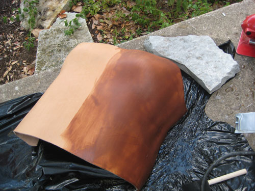
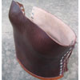

Ember Costumes
Tutorials and Resources
Susan's Cuirass (Prince Caspian Movie)
Background Information
This piece was inpsired by the Cuirass that Susan wears in the Prince Caspian Movie:Cuirass: (kwi-rass)—a cuirass is armor consisting of two parts, a breast and backpiece fastened together at the sides by means of straps and buckles. Historically, it was originally made of leather, which is where its name originates, but was later made with metal. (From Narnia Web)
Tutorial
This tutorial won in the costume's category for best crafts of 2009 at Craftster!!Part One: Make a Plaster Mold
In an incredibly messy process, John dipped strips of plaster cloth stuff into plaster mixture and covered me with them. He bought at Hobby Lobby in a big roll--two rolls covered my front and back.
The two cardboard "wings" were so that we could do both the front and the back and then separate them without cutting the fragile plaster, but they didn't work at all--or at least, we didn't really get to try them out. The plaster got so heavy as it dried that it began to pull down and make my boobs look saggy.
So I just layed down on the ground for twenty minutes so it could dry in the right place. I was counting on my bra to keep things in position, and it worked.
We then peeled the plaster mold off of my shirt and set it aside to dry.
Our mom was able to wash the plaster out of the clothes no problem, so while I suggest wearing old clothes, it won't ruin them forever.)
Step Two: Make a Resin Mold
Plaster is kind of fragile for what we want to do with the mold, so we decided to make a stronger one out of resin. John coated the inside of the mold with resin, which took ages. It was smelly and toxic, so he could only do a little at a time, leaving it outside at all times to dry.This is what the resin mold looked like when the plaster was taken off.
Step Three: Soak Leather in Water
This is armor grade super-thick leather, soaking wet. Hot water works best, and if you don't get it all wet at the same time you risk making water spots on it.Step Four: Mold Leather
John clamped it over the mold and pressed it into the correct shape, cutting it down to a more approximate size. The clamps are rubber coated and have leather scraps between them and the cuirass--otherwise they leave big dents in the final product.Step Five: Cut and Wax Leather
John cut it to the right shape and the coated it with hot wax. He uses tin snips and a sharp boxcutter to cut this super heavy leather into the right shape. The waxing process used an industrial heat gun, a pot of melted wax, and a brush. He spread the hot wax onto the leather while blowing the heat gut on it and just brushed it in until it was all the way soaked in. It shouldn't feel waxy to touch, but hard like vacuumformed plastic. The dark color is the part of the leather that has soaked up the wax, no dye used.Compared to the resin mold, post cutting and waxing: 

Step Six: Add Rivets
We cut holes in the leather where the rivets needed to go and then hammered the rivets onto the armor. There are special leather working tools that just punch holes into the leather of the size you need. (See Leather Working page for more information about leather tools) For leather work he puts the leather on a plastic cutting board on top of a granite slab supported by foam sponges and then hammers the tool with a rubber mallet. We've found that this is the quietest way of hammering with the least amount of damage to tools and surroundings. (Hammering directly onto granite--without a cutting board--will break your tools!)Then we added the rivets over the holes, hammering them into the holes we already cut.

Step Seven: The Back
The back was much simpler to make, as we just got the leather wet, shaped it against my body, and then let it dry overnight. We thought about waxing it also, but for comfort's sake decided that the back should be more supple. John then cut the back piece to the right size and added rivets.Finally, we dyed the back piece and some laces (cut from leather) to match using a dark mahogany dye. It took about three coats to get it to match the front, and then a coat of dye sealant so that it wouldn't stain anything. When it's all done, you can glue/rivet as many decorations to it as you want!
Back to Leather
Back to Armor
Other Night Raid Props
 Underdress
Underdress  Leather Armor Cuirass
 Red Bag
Red Bag
 Archery Bracer
Archery Bracer
Back to Susan's Night Raid Outfit
Back to Susan's Battle Outfit
Back to Costume Gallery